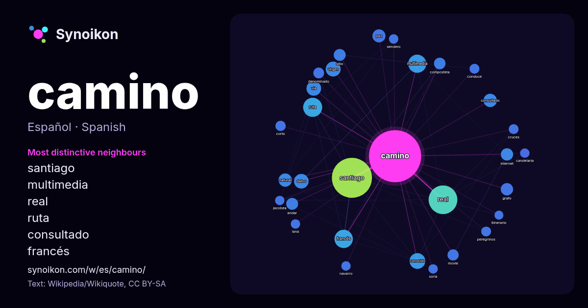

Español · lista de palabras del día
camino
“road” · Las palabras encontradas a su alrededor en 1547 apariciones de Wikipedia, Wikiquote.

Vecinos más característicos
- santiago 99×
- multimedia 37×
- real 31×
- ruta 24×
- consultado 21×
- francés 20×
- virgen 18×
- grafo 17×
- andar 17×
- compostela 15×
- movie 15×
- vía 14×
- internet 14×
- datos 13×
- paz 12×
- peregrinos 11×
- jacobea 11×
- conduce 11×
- conocido 11×
- denominado 11×
× = cuántas veces más que en el texto general de Wikipedia.
Vecinos más frecuentes
- santiago 181
- real 93
- ruta 41
- francés 38
- multimedia 37
- españa 33
- nombre 30
- conocido 28
- español 27
- virgen 25
- datos 24
- vía 24
- san 22
- consultado 20
- natural 20
- película 20
- hombre 19
- localidad 19
- paz 19
- norte 18
En contexto
- El término camino hace referencia a varios artículos: Carretera, vía de dominio y uso público, generalmente en zona rural; Camino rural, vía de pequeñas Wikipedia snippets · Camino
- Camino de Santiago Sanabrés, también denominado Camino Mozárabe (igual que algunos caminos del sur de la península ibérica) o, en Galicia, Camino Gallego Wikipedia snippets · Camino de Santiago Sanabrés
- (Galicia, España). Históricamente se ha conocido como «Camino de Santiago» (hoy denominado «Camino de Santiago francés») al itinerario principal que, partiendo Wikipedia snippets · Camino de Santiago
- El Camino Lebaniego o Camino de Liébana, también conocido como Camino Lebaniego Cántabro, es un ramal del Camino de Santiago de la Costa que permite a Wikipedia snippets · Camino Lebaniego
- El Camino Olvidado, Viejo Camino de Santiago o Camino de la Montaña es una ruta jacobea del norte de España, que durante la Edad Media, desde el siglo IX Wikipedia snippets · Camino Olvidado
- Jaca), en la unión entre el Camino aragonés y el Camino navarro. En un segundo lugar, según otra acepción, incluiría el Camino navarro y comenzaría a los Wikipedia snippets · Camino de Santiago Francés
- del Camino en 1505. Los terrenos de La Virgen del Camino limitan con los de Ferral del Bernesga al norte, San Andrés del Rabanedo y Trobajo del Camino al Wikipedia snippets · La Virgen del Camino
- vías principales: el Camino Real del Perú, que seguía en líneas generales el itinerario de la actual Ruta 9 de Argentina, y el Camino Real del Oeste, en Wikipedia snippets · Camino Real (Sudamérica)
Más palabras
- agua
- arte
- bosque
- caballo
- campana
- canción
- ciencia
- ciudad
- clima
- comida
- corazón
- desierto
- dinero
- dios
- espejo
- estrella
- familia
- fuerza
- gato
- historia
- invierno
- isla
- jardín
- lengua
- lluvia
- madre
- mapa
- miel
- montaña
- muerte
- naturaleza
- oro
- otoño
- pan
- perro
- puente
- reloj
- sal
- salud
- silencio
- sombra
- tiempo
- tormenta
- trabajo
- tren
- té
- verano
- verdad
- vida
Precalculado el 2026-10-09 con los ajustes predeterminados (±5 palabras, corpus mediano). El mapa interactivo puede actualizarlo con datos en vivo.
Interfaz traducida automáticamente; se agradecen correcciones.